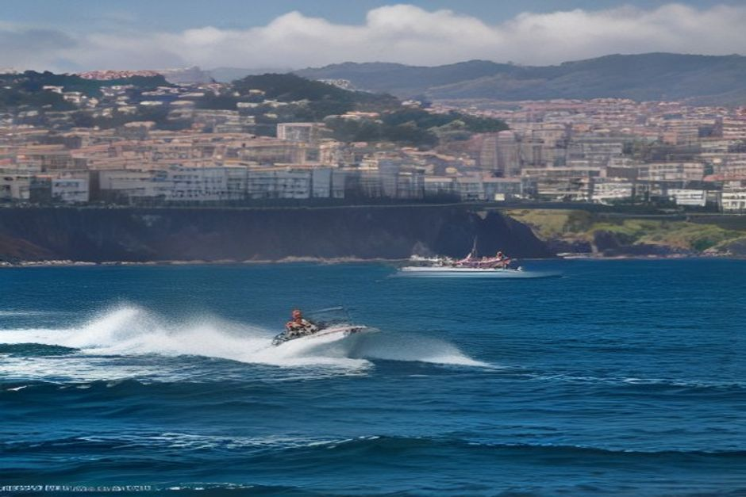
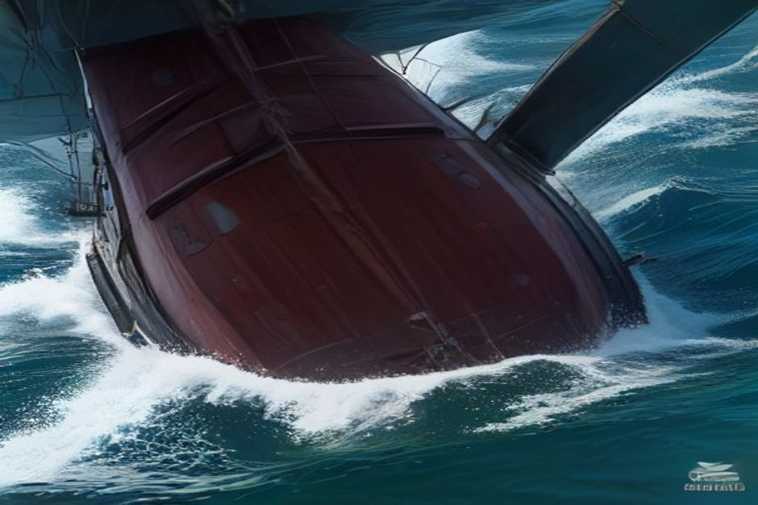

Durante três semanas, todos os agostos, a Baía do Funchal deixa de ser paisagem e passa a ser pista de regatas. Veleiros, canoas tradicionais em estilo de tronco escavado e nadadores de águas abertas revezam-se em frente ao mesmo troço de frente-mar de onde partem os barcos da Chifbay. Eis o que é, na prática, o Funchal Náutico 2026, o programa completo e onde assistir.
O que é o Funchal Náutico 2026?
O Funchal Náutico 2026 é uma época de eventos de desportos náuticos organizada pela Câmara Municipal do Funchal e realizada pelos clubes e federações náuticas da ilha, entre 14 de agosto e 6 de setembro de 2026. Mais do que um único dia de festa, é um programa distribuído por algumas datas-chave — vela, canoagem e natação em águas abertas —, quase tudo realizado na própria Baía do Funchal. O objetivo declarado, segundo a câmara, é reforçar a ligação da cidade ao mar e apresentar as suas diferentes modalidades náuticas a um público que, na maior parte das vezes, só vê a baía a partir de uma esplanada.

Quais são os principais eventos, e quando decorrem?
Quatro provas formam o núcleo do programa. A Regata Porto Santo Line, organizada pelo Clube Naval do Funchal, abre o festival com a primeira etapa a 14 de agosto às 19h00 e a etapa de regresso a 16 de agosto às 12h00, navegando o percurso em águas abertas entre a costa sul da Madeira e Porto Santo. O fim de semana seguinte é o mais preenchido: a 22 de agosto, a baía recebe a NELO 510 Cup (09h00–10h00) e um campeonato de escolas de canoagem (10h00–11h00), ambos organizados pela Associação Regional de Canoagem da Madeira, seguidos ao meio-dia pela XXII Regata de Canoas Tradicionais do Funchal (12h00–13h00) — uma prova para as canoas tradicionais de madeira da Madeira, no percurso São Lázaro–Praia de São Tiago–São Lázaro. Na manhã seguinte, 23 de agosto, tem lugar a XXXI Prova de Mar José da Silva "SACA" (11h00–12h00), uma travessia em águas abertas organizada pela Associação de Natação da Madeira ao longo do troço Cais da Cidade–Barreirinha — marcada para coincidir com o próprio Dia da Cidade do Funchal.
Qual é o melhor sítio para assistir?
Não precisa de bilhete nem de bancada — todos os eventos decorrem ao longo de um curto troço de frente-mar, perfeitamente percorrível a pé. A Avenida do Mar oferece uma vista longa e aberta sobre a maior parte da baía e é o ponto mais fácil para as partidas de vela. Para a regata de canoas tradicionais e a travessia SACA, que terminam ambas perto da zona velha, o passeio da Barreirinha, na Zona Velha, coloca-o mais próximo da ação, com esplanadas mesmo atrás de si. Se preferir assistir por cima da multidão, o quebra-mar junto à Marina do Funchal dá uma vista limpa sobre todo o percurso e serve também como bom ponto para planear a sua própria saída em torno do programa.
É possível assistir a partir do mar?
Sim, e muda completamente a perspetiva. Tudo o que acontece a 22 e 23 de agosto decorre a poucas centenas de metros da Marina do Funchal, precisamente de onde partem os barcos da Chifbay. Se marcar um passeio de barco privado com a Chifbay para uma manhã de prova, é bem provável que passe pela frota, pelos barcos de apoio e pelas boias de marcação à saída da baía, antes de seguir ao longo da costa em direção ao Cabo Girão — um ângulo genuinamente diferente sobre um evento que a maioria das pessoas só vê a partir do passeio marítimo. Não é um passeio de espectador construído à volta das regatas, apenas um charter privado que, por acaso, parte do meio de onde elas se realizam.
O festival afeta os passeios de barco ou a natação?
Apenas de forma ligeira e prática. Nas manhãs de prova — sobretudo a 14, 16, 22 e 23 de agosto — conte com mais algumas embarcações pequenas, boias cor de laranja e barcos de segurança dentro da baía, e com os comandantes a ajustar a linha exata de saída da marina para se manterem afastados do percurso. Os passeios continuam a decorrer conforme previsto; nada no Funchal Náutico fecha a baía nem cancela partidas. As praias e piscinas naturais no resto da costa — Doca do Cavacas, Ponta do Sol, Ribeira Brava — não são afetadas, já que as provas se limitam à própria frente-mar do Funchal.
A baía parece sempre igual em todos os postais. Durante três semanas em agosto, está realmente a trabalhar.
Se as suas datas na Madeira coincidirem com alguma destas provas, não custa nada descer até à água e assistir — e se já tiver um passeio de barco marcado para essa semana, vale a pena manter os olhos abertos à entrada ou à saída da marina. Pode acabar por ter um lugar melhor do que o do passeio marítimo.
